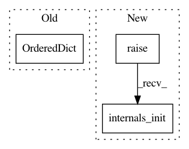

8b61a18641fdaa14601d0ed2e3337c8ee7b65f7c,tensorforce/core/policies/parametrized_distributions.py,ParametrizedDistributions,internals_init,#ParametrizedDistributions#,153
Before Change
return internals_spec
def internals_init(self):
internals_init = OrderedDict()
for name, internal_init in self.network.internals_init().items():
internals_init[self.name + "-" + name] = internal_init
return internals_init
After Change
return internals_spec
def internals_init(self):
internals_init = super().internals_init()
for name, init in self.network.internals_init().items():
internals_init["{}-{}".format(self.name, name)] = init
In pattern: SUPERPATTERN
Frequency: 3
Non-data size: 3
Instances
Project Name: reinforceio/tensorforce
Commit Name: 8b61a18641fdaa14601d0ed2e3337c8ee7b65f7c
Time: 2020-03-22
Author: alexkuhnle@t-online.de
File Name: tensorforce/core/policies/parametrized_distributions.py
Class Name: ParametrizedDistributions
Method Name: internals_init
Project Name: reinforceio/tensorforce
Commit Name: 8b61a18641fdaa14601d0ed2e3337c8ee7b65f7c
Time: 2020-03-22
Author: alexkuhnle@t-online.de
File Name: tensorforce/core/layers/internal_rnn.py
Class Name: InternalRnn
Method Name: internals_init
Project Name: reinforceio/tensorforce
Commit Name: 8b61a18641fdaa14601d0ed2e3337c8ee7b65f7c
Time: 2020-03-22
Author: alexkuhnle@t-online.de
File Name: tensorforce/core/networks/network.py
Class Name: LayerbasedNetwork
Method Name: internals_init